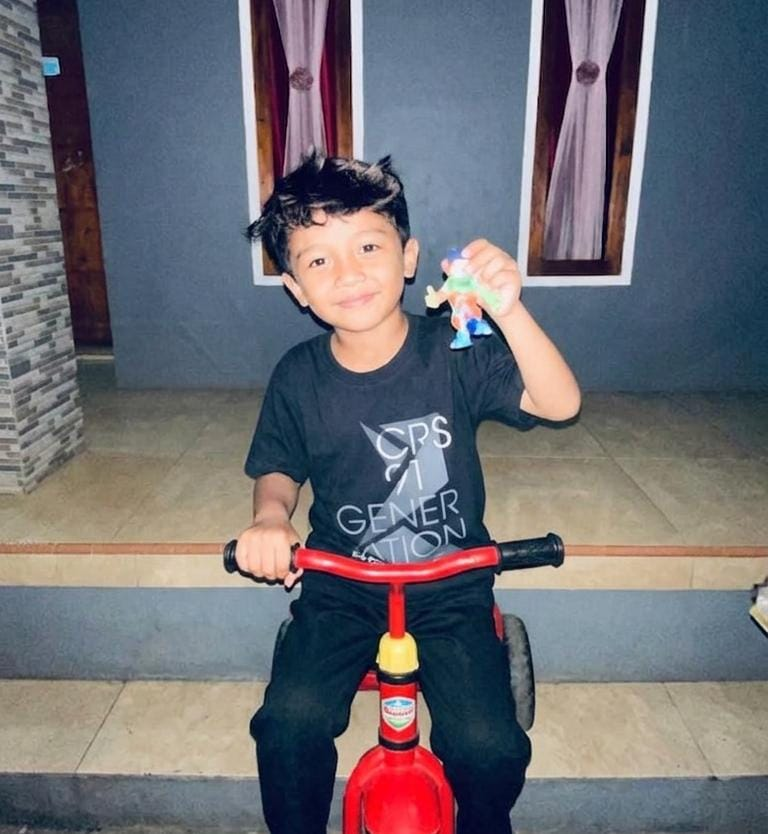

Siswa SMK Jurusan Rekayasa Perangkat Lunak yang sedang belajar membuat website interaktif dan menarik.
Saya adalah siswa kelas 12 di SMK Nashirul Huda. Saya memiliki minat yang besar di dunia teknologi, khususnya Web Development. Saya suka mencoba hal baru, memecahkan masalah logika, dan berkolaborasi dalam tugas kelompok. Tujuan saya saat ini adalah menguasai dasar-dasar pemrograman web sebelum lulus sekolah.
Tugas akhir semester 1 membuat website biodata sederhana menggunakan HTML murni.
Membuat logika kalkulator matematika dasar menggunakan JavaScript.
Proyek desain grafis untuk kampanye kebersihan lingkungan sekolah.